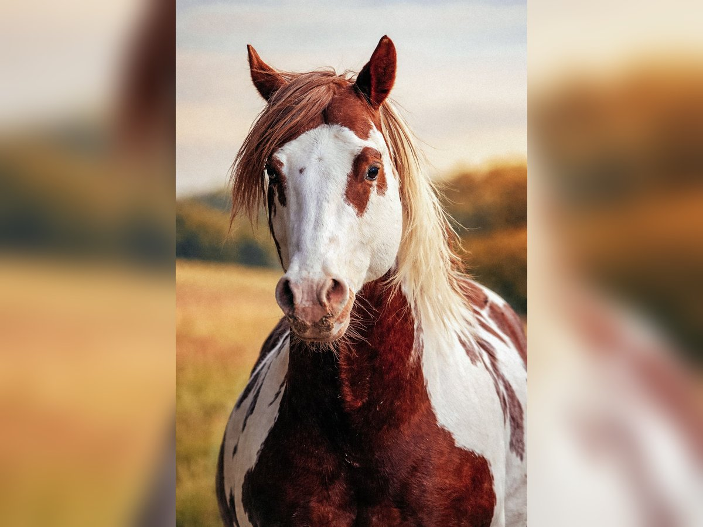

Anatomia: Possuem pernas longas e musculatura forte adaptada para a corrida rápida.Cascos: São animais ungulados, o que significa que caminham sobre a ponta dos dedos revestidos por um casco de queratina.Sentidos: Têm uma das maiores visões entre os mamíferos terrestres, com olhos nas laterais da cabeça que cobrem quase 360 graus.Dentição: Possuem dentes adaptados para triturar capim de forma contínua ao longo do dia.